7．诡辩学派
自公元前479年波斯人在迈开里（Mycale）地方最后战败之后，雅典便成为希腊城邦联盟中的主要城市和商业中心。从事贸易所得的财富使雅典成为当时最富庶的城市，他们的著名领袖伯里克利（Pericles）就利用这财富来修建和美化这一城市。爱奥尼亚派、毕达哥拉斯派以及其他的学者都被吸引到雅典来。这里人们的重点就放在抽象推理方面，并以使理性统治遍及整个自然界和人类作为其宗旨。
在雅典的第一个学派——诡辩派中包括各方面的学者大师，如文法、修辞、辩证法、演讲术、人伦，以及对本书有关的几何、天文和哲学方面的学者。他们研究的主要目标之一是用数学来了解宇宙是怎样运转着的。
有好些数学结果是为解决三个著名的作图问题而得出的副产品。这三个作图题是：作一正方形使其与给定的圆等面积；给定立方体的一边，求作另一立方体之边，使后者体积两倍于前者体积；用尺规三等分任意角。
这些著名作图题的起因有各种说法。例如关于倍立方问题起因，在埃拉托斯特尼（Eratosthenes，约公元前284—前192）的一本书中的一种说法是：得洛斯地方的人遭瘟疫求教于巫神，巫神告诉他们应把现有立方祭坛加倍。得洛斯人知道把祭坛一边加倍是不能把体积加倍的，就去找柏拉图解决。柏拉图告诉他们说巫神之意并不在于要双倍大的祭坛，而只是为借此谴责希腊人不重视数学并对几何不够尊崇。传记家普卢塔赫（Plutarch）也记载了这一故事。
实际上这些作图题是希腊人在解出了一些作图题之后的引申。因任意角可二等分，自然就想试三等分。因以正方形对角线为一边的正方形有两倍于前者的面积，就理所当然地提出相应的立方体问题。化圆为方问题是希腊人求作一定形状的图形使之与给定图形等面积这类问题中的典型问题。此外还有求作正七边形或更多边数的正多边形问题就不那么出名了。但这也是在作出正方形、正五边形、正六边形之后引申出来的问题。
作图之限于用尺规(3)一事也有各种解释。希腊人认为直线和圆是基本图形，而直尺和圆规是其具体化。所以用这两种工具比较好。有一种理由是说柏拉图反对用其他机械工具，因其过于依赖感觉境界而不甚依赖思想境界，而柏拉图认为后者是第一性的。但很可能在公元前5世纪时对这种限制不甚严格。不过我们以后可以看到作图题在希腊几何中起了重要作用，而欧几里得公理确实限制只许用尺规作图。自他以后这一限制就严格要求了。例如帕普斯说若图形能用尺规作出，那么用其他方法来解就不可取。
最早试图解这三大名题的是爱奥尼亚派学者阿那克萨哥拉，据说他在牢房里还研究化圆为方问题，但他的结果如何不得而知。研究得最出名的是伊利斯城［Elis，希腊伯罗奔尼撒（Peloponnesus）的城市］的希比亚斯（Hippias）。此人是诡辩学派的头面人物，生于公元前460年左右，是苏格拉底（Socrates）的同时代人。
希比亚斯在设法三等分一角时发明了一种新曲线叫割圆曲线，只可惜这曲线本身也是不能用尺规作出的。割圆曲线是这样形成的：设AB（图3.10）顺时针方向以匀速绕A转到AD的位置。同时让BC平行于其自身以匀速下移到AD。设AB转到AD′时BC移到B′C′。令E′为AD′与B′C′的交点。则此E′便是割圆曲线BE′G上的一个典型点。G是割圆曲线的终点(4)。
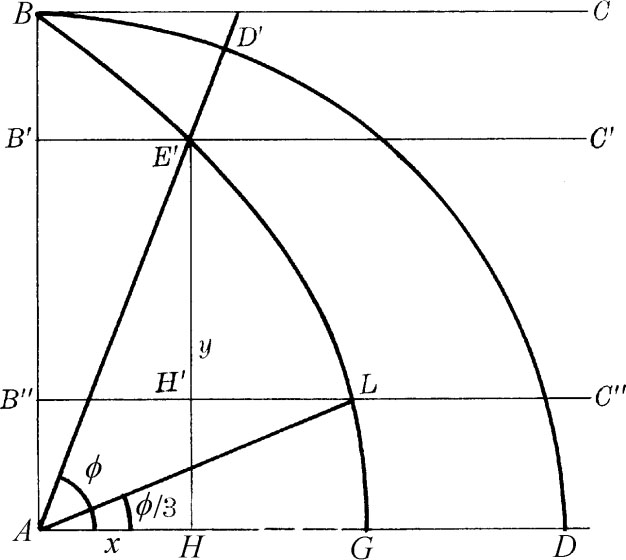
图3.10
割圆曲线在笛卡儿直角坐标系中的方程可如下得出：设AB转到AD总共需要时间T，令AD′到达AD所需的那部分时间是t/T。因AD′与B′C′都是匀速运动的，故B′C′在移过BA中的E′H这一段路时所需的那部分时间也是t/T。所以
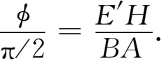
若以y记E′H，以a记BA，则有
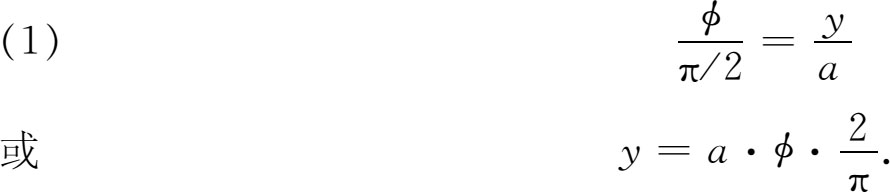
但若AH＝x，则
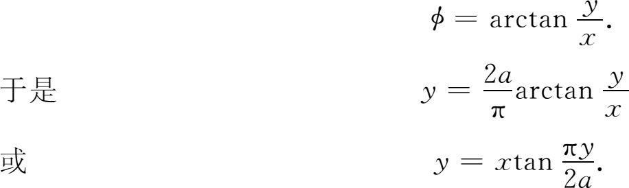
这曲线若能作出，就可三等分任一锐角。令
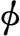
是这个角。把y三等分使E′H′＝2H′H。过H′作B″C″令其交割圆曲线于L。作AL。于是便有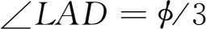
。因根据得出（1）的那些理由，可知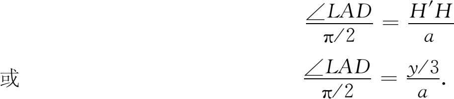
但据（1）有
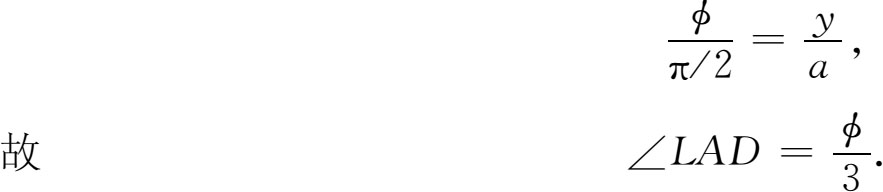
由作图题而引出的另一著名发现是开奥斯（Chios）的希波克拉底（公元前5世纪）得出的。此人是他那个世纪中最出名的数学家，但读者不要把他和希腊医学祖师科斯（Cos）地方的希波克拉底混为一谈。数学家希波克拉底于该世纪下半叶谋生于雅典，他不属诡辩派，但很可能属毕达哥拉斯派。据说定理按其证明所需依据来排先后次序（这是大家在学习欧几里得著作时所熟悉的做法）是他最早想出来的。最早把间接证法引用到数学里的据说也是他。他所著的几何书叫《原本》（Elements），已经失传。
希波克拉底当然没有解决化圆为方问题，但确实解决了一个有关的问题。设ABC是一等腰直角三角形（图3.11），并设它内接于中心为O的半圆。设AEB是以AB为直径的半圆。则有
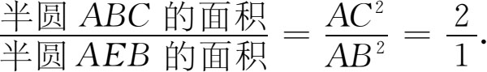
因此OADB的面积等于半圆AEB的面积。现在把两者的公共面积ADB去掉，则知月牙形（阴影部分）的面积等于三角形AOB的面积。这样，一个以曲线弧为边的月牙形面积等于一个直边图形的面积；或者说把曲边图形化成了直边图形。这个结果叫做求积（quadrature）；就是说曲边图形的面积求出来了，因为得出了与它等面积的直边形，而直边形的面积是能计算的。
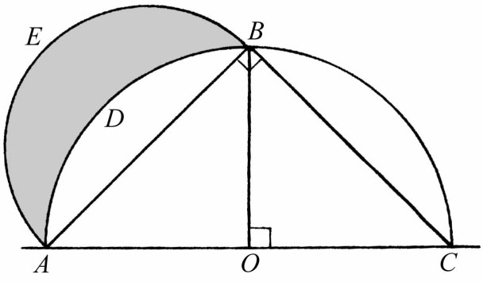
图3.11
希波克拉底在这个证明里应用了圆面积之比等于其直径平方之比这一事实。但希波克拉底是否确实能证明这一事实则令人怀疑，因为它的证明需要用到后日由欧多克索斯所发明的穷竭法。
希波克拉底还作出了另外三个月牙形的等积直边形。关于月牙形的这项工作我们是从辛普利修斯的著作中得知的，这也是古典希腊数学出现在希腊人原著中的唯一的较大片断。
希波克拉底又指出倍立方问题可化为在一线段与另一双倍长的线段之间求两个比例中项的问题。用我们的代数记法来写，令x与y是这样两个量，使得
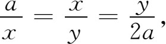
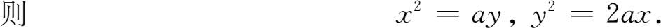
因
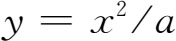
，故自第二式得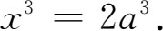
x便是所要求的解答，但不能用尺规作出。当然希波克拉底必定是从几何上来进行推理的，这种推理方式我们在考察阿波罗尼斯的《圆锥曲线》时可以看得比较清楚。
还有一个很重要的想法是诡辩派学者安提芬（Antiphon，公元前5世纪）和布赖森（Bryson，约公元前450年）提出来的。安提芬在解化圆为方问题时想起用边数不断增加的内接多边形来接近圆面积。布赖森则又用外切多边形来丰富这一思想。安提芬进一步提出把圆看作是无穷多边的正多边形。以后可以看到（第4章第9节）欧多克索斯在穷竭法里是怎样采纳了这些想法的。